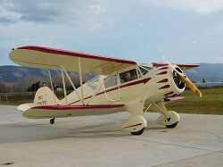
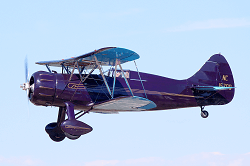

WACO Collection
WACO Aircraft List
1925 WACO Nine

Acquired with funds from Terry Brandt.
Engine: Curtiss OX-5, 90 HP
The WACO Nine is the eleventh airplane to be awarded a type certificate in the wake of the Air Commerce Act of 1926 which began the regulation of aviation. Designed in 1925 around the plentiful Curtiss OX-5 engine by two men with no more than high school education, the Model Nine was ruggedly built and readily met the requirements for certification. A WACO Nine flew in the 1925 Ford Air Tour and fourteen of them participated in the 1926 National Air Races. It seated the pilot plus two passengers and served in barnstorming, racing, and utility roles.
Additional Specifications:
Cruise: 79 MPH
Top Speed: 92 MPH
Empty Weight: 1320 lbs
Gross Weight: 2100 lbs
Wing Span: 31'7" / 29'4"
Length: 23'3"
Height: 9'3"
Service Ceiling: 12,000'
Climb in 1 Minute: 500' at sea level
Approximate Number Built: 267
(Data pulled from Joseph Juptner's U.S. Civil Aircraft series.)
1928 WACO ATO "Taperwing"

Donation: Jerry Wenger
Engine: Wright Radial, 440 HP
Built by Advanced Aircraft in Troy, Ohio, which later became the Waco Aircraft Company, the "Taperwing" was modified from an original design with the addition of tapered wings. The taperwing was favored for its maneuverability, speed, and flashy design. Three taperwings were entered in the 1928 Transcontinental Derby from N.Y. to L.A. They finished an impressive 1st, 3rd, and 5th. The Taperwing went on to become a popular choice of stunt pilots at air shows and a consistent winner on the air race circuit. Approximately 53 were built.
Additional Specifications:
Cruise: 110 MPH
Top Speed: 140 MPH
Empty Weight: 2191 lbs
Gross Weight: 2600 lbs
Wing Span: 30'3" / 26'6"
Length: 22'6"
Height: 9'
Service Ceiling: 19,000'
Climb in 1 Minute: 1,200' at sea level
Approximate Number Built: 53
(Data pulled from Joseph Juptner's U.S. Civil Aircraft series.)
1928 WACO GXE

Donation: Terry Brandt
Engine: Curtiss OX-5, 90 HP
Built as the WACO Ten before WACO changed its model designation in 1928, the GXE was among the first of WACO's alphabet airplanes. It was an extremely adaptable and popular airplane and was used for barnstorming (aerobatics and selling rides), training and charter flying. The Ten was raced as well, and an OX-5-powered WACO Ten won its class in the 1927 New York-to-Spokane Transcontinental Air Derby. Innovations included an in-flight-adjustable horizontal stabilizer and “oleo” strut hydraulic landing gear. Several different engines were installed on the Ten during its seven-year production run.
Additional Specifications:
Cruise: 84 MPH
Top Speed: 97 MPH
Empty Weight: 1200 lbs
Gross Weight: 2025 lbs
Wing Span: 30'7" / 29'5"
Length: 23'6"
Height: 9'
Service Ceiling: 12,000'
Climb in 1 Minute: 520' at sea level
Approximate Number Built: 1,600
(Data pulled from Joseph Juptner's U.S. Civil Aircraft series.)
1929 WACO CSO

Donation: Mike and Linda Strong
Engine: Wright J-6-7, 225 HP
The WACO CSO was principally a general upgrade to the WACO 10 design with more durable landing gear and using a Wright Whirlwind engine. Most other changes were not apparent from outside the fabric covering. In the early 1930’s the Brazilian military flew air mail using CSO’s due to their having longer range than the other aircraft available.
Additional Specifications:
Cruise: 108 MPH
Top Speed: 128 MPH
Empty Weight: 1628 lbs
Gross Weight: 2600 lbs
Wing Span: 30'7" / 29'5"
Length: 22'6"
Height: 9'2"
Service Ceiling: 19,000'
Climb in 1 Minute: 1,100' at sea level
Approximate Number Built: 17-ish
(Data pulled from Joseph Juptner's U.S. Civil Aircraft series.)
1930 WACO INF

Donation: North Cascades Vintage Aircraft Museum
Engine: Kinner B-5, 125 HP
Waco designed the F series to replace the earlier O series airframe. The F was lighter by more than 400 lbs. and smaller but it still accommodated three people in its two cockpits and performed as well as its predecessor with smaller, more economical engines. The INF was intended to be a sport airplane and it features Waco’s high quality construction and excellent flying characteristics.
Additional Specifications:
Cruise: 100 MPH
Top Speed: 118 MPH
Empty Weight: 1156 lbs
Gross Weight: 1896 lbs
Wing Span: 29'6"/ 27'5"
Length: 20'8"
Height: 8'4"
Service Ceiling: 16,000'
Climb in 1 Minute: 800' at sea level
Approximate Number Built: 50
(Data pulled from Joseph Juptner's U.S. Civil Aircraft series.)
1930 WACO Primary Glider
Donation: Terry Brandt
Charles Lindbergh’s Trans-Atlantic flight of 1927 fanned interest in aviation across the U.S.A. The cheapest way to participate was with a primary glider which saw great popularity in the late 1920’s in Europe. After WWI Germany was not permitted to build and fly powered aircraft so they took a particular interest in gliders. Primary gliders are minimal aircraft, little more than a seat on a wood or steel tube truss with a wing and tail feathers attached. They were most often launched from a hilltop by several men pulling on shock cords (bungees). WACO and Cessna were among the U.S. builders of these birds. Primary gliders were successful as trainers in Europe but were less successful in the U.S. where Europe’s discipline in primary glider training was absent. The U.S. accident rate far exceeded that of Europe and the Air Bureau stepped in to stanch the bloodshed. The WAAAM WACO Primary Glider, a WACO-built original, was restored by museum volunteers in 2014.
Additional Specifications:
Glide Ration: 15:1
Empty Weight: 225 lbs
Gross Weight: 450 lbs
Wing Span: 36'
Length: 21'
Height: 10'
Approximate Number Built: 300-ish
1931 WACO RNF
Donation: Terry Brandt
Engine: Warner Scarab, 125 HP
WACO had learned that horsepower was an expensive way to quicken the pulse of sport pilots. The Model F had lines reminiscent of past WACO designs but in a smaller airframe. It was designed to give performance comparable to that of larger, more powerful airplanes while using an engine that was far less costly. Stable and easy to fly, the RNF was exceptionally capable and in the hands of a good pilot could be safely landed in the confines of a 100-foot circle. As the word spread sales flew as well as the airplane. WACO had hit the jackpot.
Additional Specifications:
Cruise: 95 MPH
Top Speed: 112 MPH
Empty Weight: 1150 lbs
Gross Weight: 1897 lbs
Wing Span: 29'6" / 27'5"
Length: 20'8"
Height: 8'4"
Service Ceiling: 15,000'
Climb in 1 Minute: 730' at sea level
Approximate Number Built: 150+
(Data pulled from Joseph Juptner's U.S. Civil Aircraft series.)
1932 WACO UBA
Donation: Jerry & Sonja Wenger
Engine: Continental R-670, 220 HP
The 2-seat, side-by-side UBA was the top of the line in the A series. The goal of the A series was low cost, high performance flying. The fuselage design is a modification of the cabin WACO. The $4,895 price was still truly high during the Great Depression and production ended at just six airplanes. Three UBA survive on the FAA registry and this is the only one known to be flying. Upon its donation WAAAM’s Chief Pilot, along with his wife, flew the airplane from Kalamazoo, MI to WAAAM in Hood River, OR.
Additional Specifications:
Cruise: 115 MPH
Top Speed: 132 MPH
Empty Weight: 1409 lbs
Gross Weight: 2250 lbs
Wing Span: 29'6" / 27'5"
Length: 21'
Height: 8'9"
Service Ceiling: 15,800'
Climb in 1 Minute: 1500' at sea level
Approximate Number Built: 6
(Data pulled from Joseph Juptner's U.S. Civil Aircraft series.)
1932 WACO UBF-2
Donation: Jerry Wenger
Engine: Continental "W" -670-N, 220 HP
Developed from earlier WACO models, the "new" UBF was a 3-place, open cockpit, all-purpose biplane. One of the few models to actually be named by the Waco Aircraft Company at Troy, Ohio, the UBF was known as "The Tourist." During 1932-1933, at least 11 aircraft were built. Considered a high performance utility airplane, it quickly became a favorite of businessmen, flying services, and sportsman pilots.
Additional Specifications:
Cruise: 116 MPH
Top Speed: 132 MPH
Empty Weight: 1380 lbs
Gross Weight: 2300 lbs
Wing Span: 29'6" / 27'5"
Length: 20'9"
Height: 8'9"
Service Ceiling: 15,800'
Climb in 1 Minute: 1500' at sea level
Approximate Number Built: 18
(Data pulled from Joseph Juptner's U.S. Civil Aircraft series.)
1933 WACO UIC
Acquired with funds from Terry Brandt.
Engine: Continental R-670, 220 HP
The WACO UIC is a 4-seat cabin biplane. The cabin was luxuriously appointed with upholstery, full flight and engine instruments, automobile type doors on both sides, individual front seats, and a roomy bench seat for two in the rear. It was conventionally built with a steel tube and fabric fuselage and a wood and fabric wing. Ailerons were provided on both upper and lower wings. With its good flight characteristics and moderate performance, the cabin WACO was popular with famous names like Jacqueline Cochran and Henry DuPont as a corporate aircraft. WAAAM's WACO UIC was flown to the museum in 2015 and was refurbished in 2018.
Additional Specifications:
Cruise: 135 MPH
Top Speed: 140 MPH
Empty Weight: 1690 lbs
Gross Weight: 2800 lbs
Wing Span: 33'3" / 28'3"
Length: 25'2"
Height: 8'6"
Service Ceiling: 14,400'
Climb in 1 Minute: 900' at sea level
Approximate Number Built: 83
(Data pulled from Joseph Juptner's U.S. Civil Aircraft series.)
1935 WACO YPF-6
Donation: Jerry Wenger
Engine: Jacobs R-755, 275 HP
This is the only remaining WACO YPF in existence. The WACO YPF-6 introduced the "Coupe Top" canopy and was the last WACO model to feature the "bump" cowl. The WAAAM YPF was custom built for Miss Connie E. Johnson and was fitted with the most deluxe equipment available at the time. She specified all the equipment and the color scheme, including the gold trim that incorporated her initials as design elements. She also specified that no company logo appear on the exterior. Miss Johnston sold the airplane following an engine fire. It was repaired and during WWII it served as a secondary phase trainer in the Civilian Pilot Training Program. The canopy was blacked out for instrument training with the instructor flying in the front cockpit.
Specifications:
Cruise: 135 MPH
Top Speed: 150 MPH
Empty Weight: 1675 lbs
Gross Weight: 2650 lbs
Wing Span: 30' / 29'10"
Length: 23'4"
Height: 8'5"
Service Ceiling: 17,500'
Climb in 1 Minute: 1100' at sea level
Approximate Number Built: 2
(Data pulled from Joseph Juptner's U.S. Civil Aircraft series.)